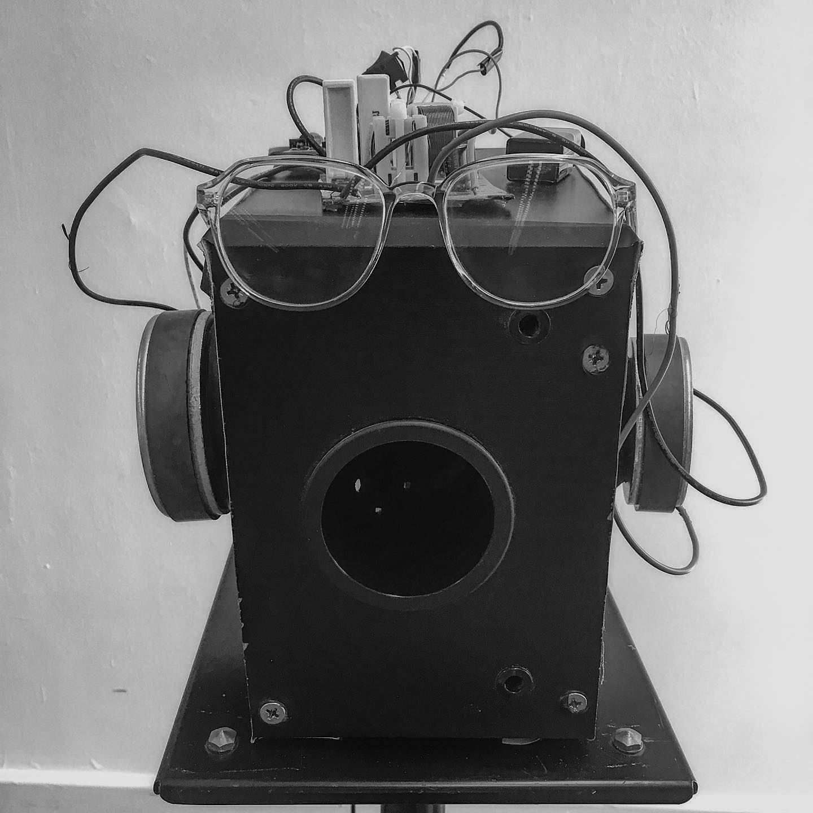

<section class= "about-section" id= "about">


  <div class="about-section-body">
    <p> Nico Daleman is a Colombian-born sound artist, musicologist and researcher based in Berlin.</p>
    <p>His pieces have been shown in Haus der Kulturen der Welt, CLB at Aufbau Haus, SoundSAbout, modular+space at Greenhouse; and he has taken part in performances at Zentrum für Kunst und Medien in Karlsruhe, Silent Green Berlin, Darmstadt 2018, ACUD MACHT NEU and Loophole. </p>
    <p>His writtings have been published in MusikTexte, Positionen and the Berliner Festspiele Blog.</p>
    <p>He is the host of "The Rest is Music", a monthly show that airs on Cashmere Radio. </p>
    <p>Currently, he is a researcher in the Data Sonification Initiative at the Hasso Plattner Institute in Potsdam. </p>
    <p>Nico studied Audio Engineering, Musicology and Sound Studies & Sonic Arts in Bogotá, Boston and Berlin. </p>
  </div>

  

</section>
